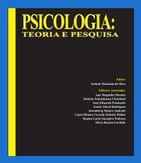

Referências Bibliográficas

Psicologia:
Psicologia:
Teoria e Pesquisa
Antony S, Ribeiro JP.
A criança hiperativa:
uma visão da Abordagem
Gestálgica.
Vencendo o TDAH
Russel A. Barkley e
Christine M. Benton
Um dos melhores livros
sobre TDAH em adultos.
Oferece estratégias
práticas para auxiliar
no alívio dos sintomas.
No mundo da lua
Dr. Paulo Mattos
100 Perguntas e respostas
sobre o Transtorno do
Déficit de Atenção com
Hiperatividade (TDAH).